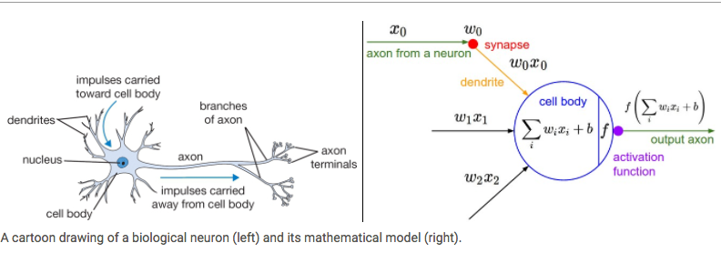
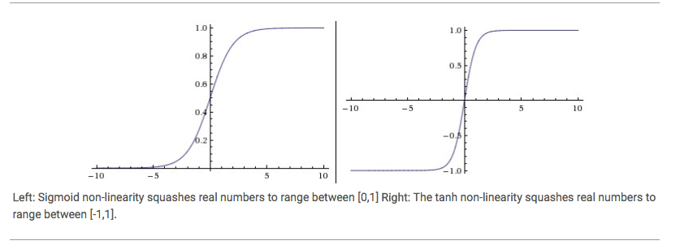
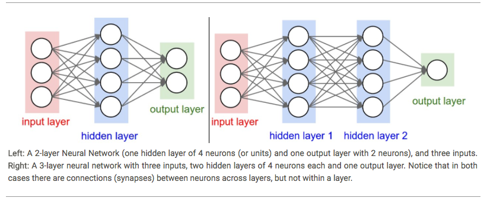

Paper - EMERGENT COMPLEXITY VIA MULTI-AGENT COMPETITION
Neuron and math model

class Neuron(object):
def forward(self, inputs):
## http://cs231n.github.io/neural-networks-1/
# sigmoid: σ(x)=1/(1+e^^−x)
""" assume inputs and weights are 1-D numpy arrays and bias is a number """
cell_body_sum = np.sum(inputs * self.weights) + self.bias
firing_rate = 1.0 / (1.0 + math.exp(-cell_body_sum)) # sigmoid activation function
return firing_rate
Dendritic Computation - Paper
Actvation Functions - sigmoid and tanh

def sigmoid(x): return 1.0 / (1.0 + math.exp(-x))
# f = lambda x: 1.0/(1.0 + np.exp(-x))
# http://neuralnetworksanddeeplearning.com/chap1.html
print(sigmoid(10)) #0.9999546021312976
print(sigmoid(-2)) #0.11920292202211755
print(math.tanh(10)) #0.9999999958776927
print(math.tanh(-2)) #-0.9640275800758169
Actvation Functions - ReLU - Rectified Linear Unit

def relu(x): return max(0,x)
print(relu(100)) #100
print(relu(-2)) #0
Neural Networks as neurons in graphs

The Loss Surfaces of Multilayer Networks - Paper